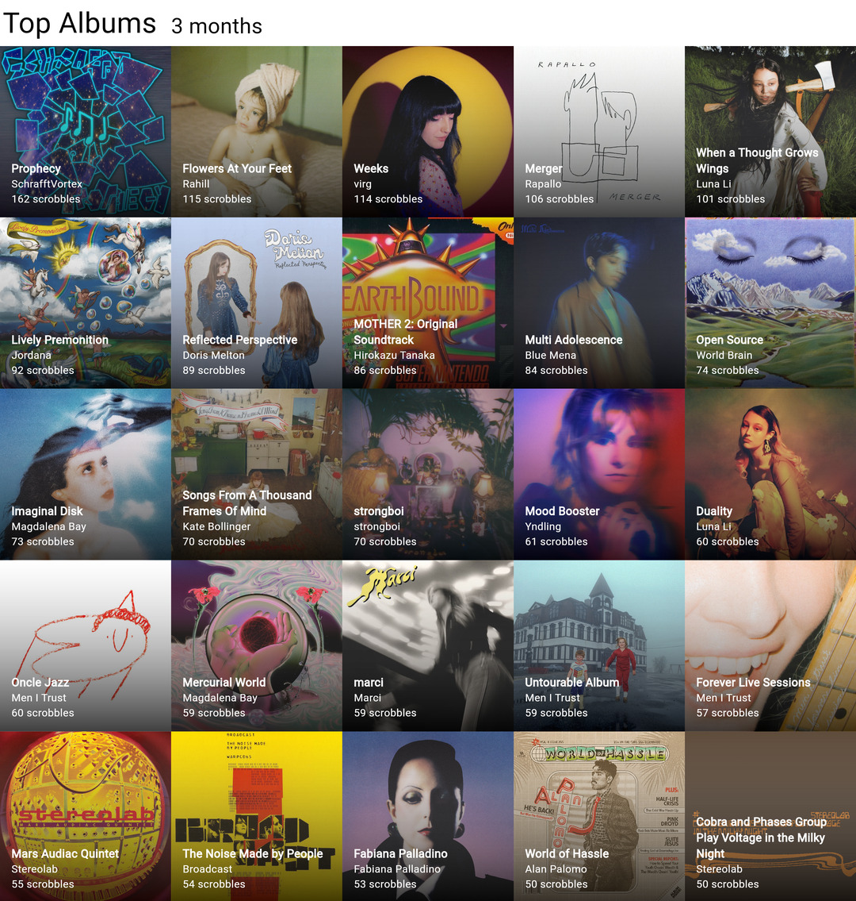

December 21, 2024
Top 25 Albums Autumn 2024
Lots of great finds this Autumn and my own album drop! Some standout artists were Rahill, Rapallo, and Jordana, each with fantastic albums front to back.

Digging in deep now.
Lots of great finds this Autumn and my own album drop! Some standout artists were Rahill, Rapallo, and Jordana, each with fantastic albums front to back.
